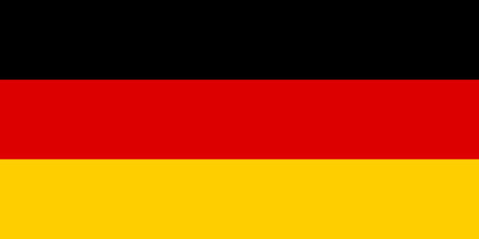
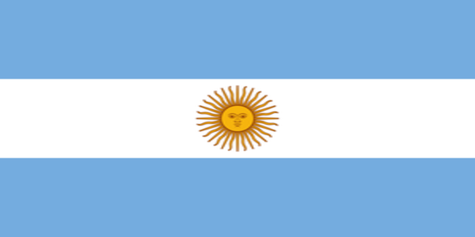
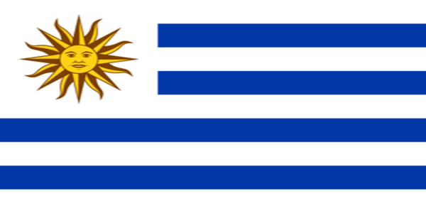
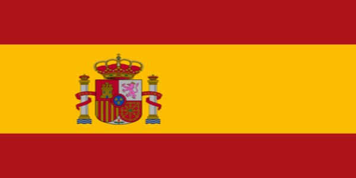

Selecciones historicas
Top 10
1- Brasil

Considerada la mejor seleccion de todos los tiempos. Ganadora de 9 copas America, 4 Confederaciones, 2 campeonatos Panamerico del futbol y por lo que es mas conocida es por sus 5 Mundiales, siendo asi la seleccion con mas Mundiales de la historia.
2- Alemania

Ganadora de 4 Mundiales y 3 Eurocopas es una de las mejores selecciones de la historia. Siempre han sido una de las selecciones mas peligrosas.
3- Argentina

Argentina al igual que Brasil ha conseguido llegar a seis finales del Mundial, pero por desgracia solo ganaron 3 finales de las 6 que jugaron, lo qual ya es mucho. Y por si fuese poco tienen 16 copas Americas, siendo la seleccion que tiene mas. Por ultimo, tienen un record historico junto a España, ganar la copa de su continente, Mundial y otra vez la copa de su contininte de forma respectiva.
4- Italia
En total, Italia ha ganado cuatro Mundiales de fútbol. Es, por tanto, una de las dos tetracampeonas del Mundo que existen. Tambien tienen 2 Eurocopas, lo que la hace mejor aun.
5- Francia
Ganadora de 2 Mundiales, 2 Eurocopas,2 copas Confederaciones, 1 Conmebol UEFA y 1 Nations League. Han sido una seleccion bastante fuerte del de 2018, des de que ganaron el mundial, el rendimiento de su juven estrella Mbappe cada vez lo hace mejor, haciendo a la seleccion francesa muy peligrosa
6- uruguay

Tienen 2 Mundiales, 15 copas Americas siendo la segunda seleccion con mas Copas Americas por detras de argentina. Y tambien tienen 2 Trofeos de Mundial antes de que e llamase asi, eran una especie de juegos olimpicos.
7- España

Ganadora de 1 Mundial, 4 Eurocopas (siendo la seleccion con mas de ellas),y una Conferens League. Tiene el record historico con argentina de hacer Eurocopa Mundial y Eurocopa de manera consecutiva.
8- Holanda
Tan solo tienen 1 Eurocopa, pero estan en novena posicion no solo por los jugadores historicos que ha tenido la seleccion (Gullit, Van Basten, Cruyff y muchisimos mas jugadores de nivel elite) sino que tambien, a pesar de tener 1 eurocopa llegaron a 4 finales teniendpo 1 Eurocopa y 3 subcampeon de ella. Pero por si fuese poco tambien tienen fueron subcampeones en un mundial, perdiendo la final contra la españa de 2010.
9- Inglaterra
Siempre han sido de las mejores selecciones de la historia, siempre se han mantenido en un nivel altisimo, pero a pesar de ello, ganaron 1 Mundial, lo cual esta muy bien, pero no tienen ni una sola Eurocopa, han llegado 2 vezes a finales de Eurocopa, siendo derrotadoes por Italia en 2020 y España en 2024.
10- Belgica
A partir de aqui el nivel bajó muchisimo, habiendo una diferencia abismal entre el noveno y este. Solo han ganado 1 vez los juegos Olimpicos en 1920, apartir de ahi solo han conseguido ser subcampeones de Eurocopa 1 vez en 1980.